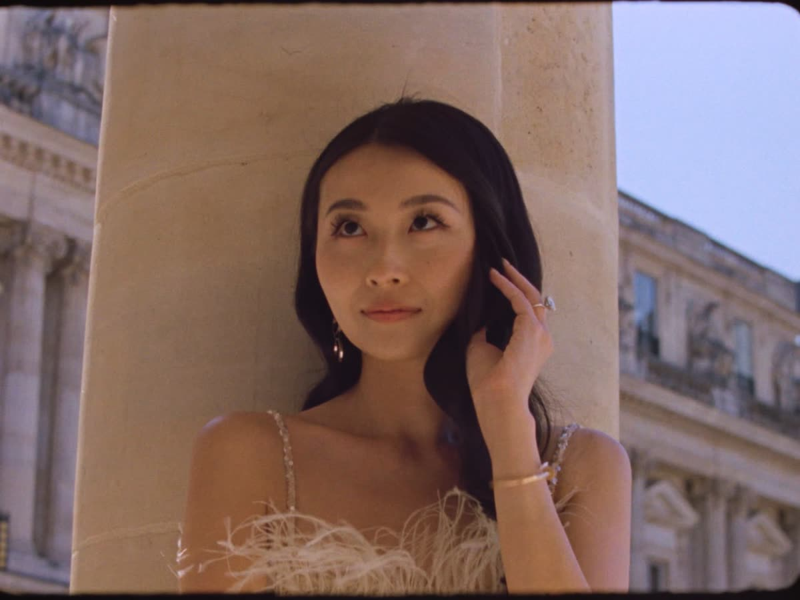
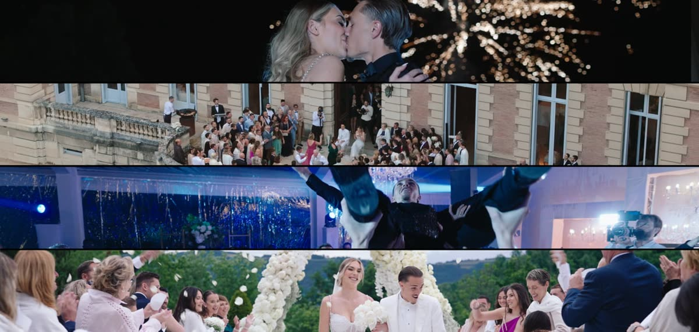
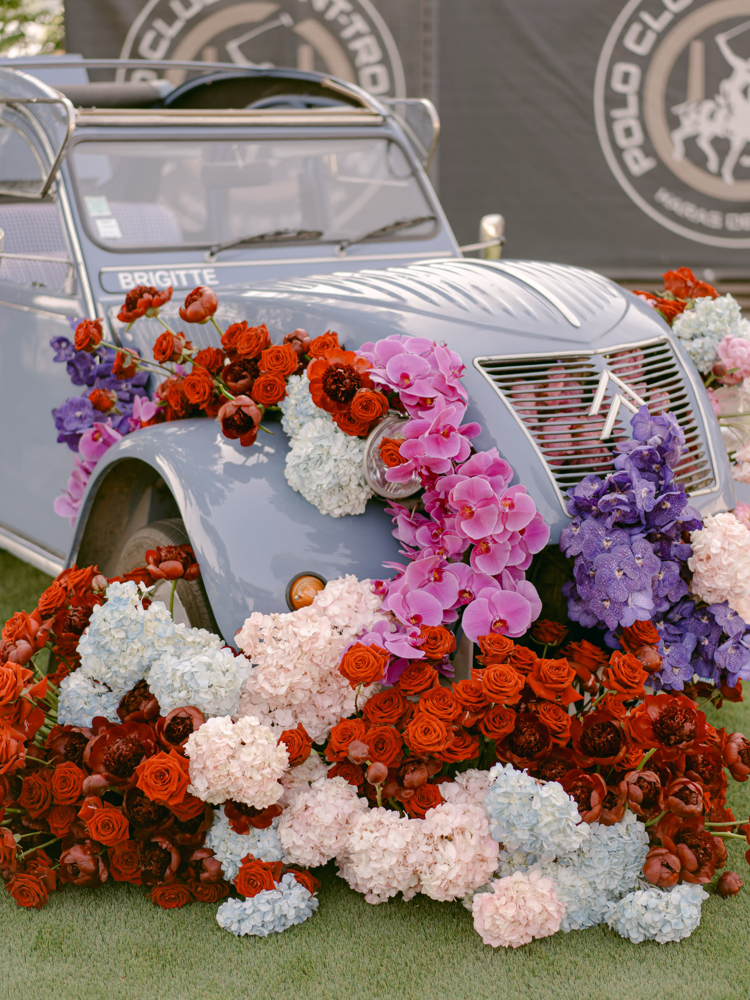

— Latest News
The Journal

Super 8mm and Super 16mm — When Analog Comes Back Into Our Lives
Real analog film is back on wedding days ... not a digital filter, but true Super 8mm and 16mm motion-picture film. Here's the data behind the trend, and how Chromata Films shoots it for real.

Marcella Raneri and Daniel Nutkis — A Floral Engagement Party at the Ritz-Carlton Dallas, with a Surprise Set by The Chainsmokers
Marcella Raneri and Daniel Nutkis's 200,000-stem floral engagement party at the Ritz-Carlton Dallas ... a vintage trolley entrance, a Parisian-street ballroom, and a surprise set by The Chainsmokers.

Maxence and Elise Caqueret — A Private Wedding Film
An intimate, family-only wedding film for Maxence and Elise Caqueret, captured with the same discretion they asked of everyone in the room.

AI Wedding Masterclass for Planners and Designers
Learn how to turn sketches into photoreal wedding concepts with Midjourney and AI. A hands-on masterclass for planners and designers, led by Chromata Films founder Kevin Lopez.

Jacqueline and Gordon — A St-Tropez Experience Unlike Any Other
Jacqueline and Gordon's wedding in St-Tropez could be summarized in one simple word: WOW.

Russell Westbrook and Nina Westbrook — Wedding Anniversary
Filming an anniversary celebration for Russell and Nina Westbrook ... proof that the best love stories deserve a sequel.

A Riviera Fairytale: Alexa and Wilton's Extravagant St-Tropez Wedding
Dreaming of a destination wedding bathed in sunshine and luxury? Look no further than Alexa and Wilton's magical St-Tropez celebration by House of Kirschner.

A Parisian Dream Tour: The Luxurious Wedding of J & A
Dreaming of a Parisian wedding overflowing with elegance, romance, and a touch of cinematic magic? Versailles and the Musée Rodin, in one unforgettable celebration.

Paris 2024 Olympics: A Wedding-Themed Extravaganza Brought to Life by AI
What would the Paris 2024 Olympics look like as a wedding? Chromata Films reimagined the Games as a luxury wedding editorial, built entirely with AI image generation.
— Begin Your Journey